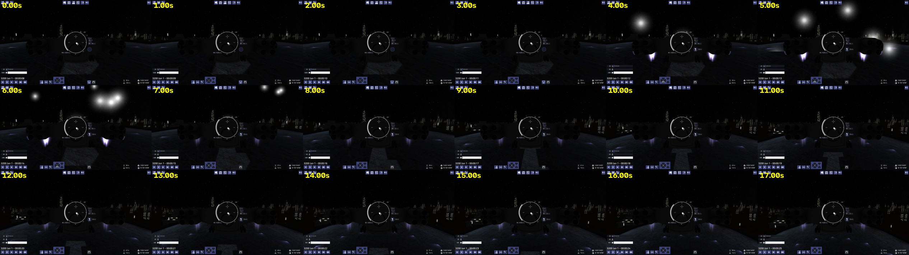
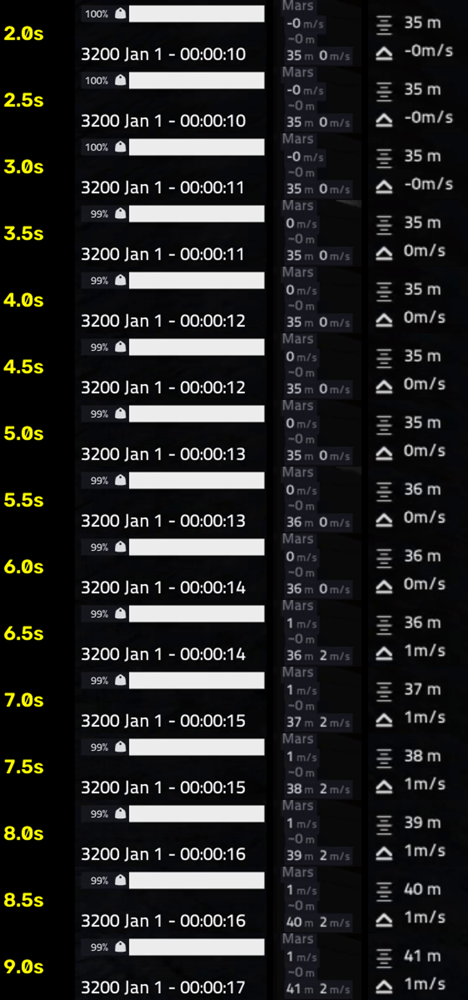

Eval: pioneerspacesim__pioneer_6110_mm
All 19 dimensions score 5. Local docker runs on an image built from the delivered bundle: oracle 1.0 (twice, identical), nop 0.0 (f2p 0/2, p2p 2/2), fix.patch applies at harbor_base. Bundle digest 8c7d68ef matches the Oracle, Nop and with-image locks; the no-image digest baebb4c0 matches a rebuilt image-stripped copy. Trials meet Option A: 0/3 no-image, exactly 1/4 with-image (RVPWnXn). A 6-way subset matrix shows every single/pair of the golden's three data fixes still fails (hull+tag fails only on pad 1, the pad in the video), and two different correct fixes (RVPWnXn's all-pads fix; deleting the drifted low-LOD tag) pass, so the tests are behavioral and not overfit. Non-graded: difficulty_explanation overstates that any partial fix fails (RVPWnXn skipped the hull); test.sh has stale wx template comments.
Scorecard
Every dimension in rubric order. Click a cell to see what is wrong (or the evidence, if it passed).
Tasks.tar.gz: task.toml 4200 B, instruction.md 1162, evidence_bundle.json 1373, environment/Dockerfile 4588, environment/assets/ASSET_MANIFEST.json 587, solution/fix.patch 24572, solution/solve.sh 349, tests/config.json 569, tests/test.patch 8674, tests/test.sh 10609, tests/verifier.py 8579. The three JSON files parse, task.toml parses with tomllib, python -I -m py_compile tests/verifier.py OK, bash -n OK on test.sh and solve.sh. recording.mp4 decodes: ffprobe in the task image: h264 1280x720, 30 fps, 540 frames, 18.0 s (OpenCV on the host: 540 frames decoded, 1280x720, 30 fps, 18.0 s). Extras: environment/bugs/bug_01.patch, bug_02.patch (injected bugs, applied and deleted in one RUN) are allowed.Tasks.tar.gz unpacks to Tasks/pioneerspacesim__pioneer_6110_mm/; Trials.tar.gz unpacks to Trials/ with with_images/ (4 trials: BjPwjEG, Prkszxp, RVPWnXn, qYJPNcQ) and without_images/ (3 trials: 29JXsD7, 9N5QYpw, Pca8Fmy) = 7 trials, Option A. Oracle.tar.gz, Nop.tar.gz, Analyze.tar.gz and Check.tar.gz are also shipped, each with its own top-level folder./app/.harbor_assets/recording.mp4 resolves (Dockerfile COPY assets/recording.mp4 /app/.harbor_assets/; ls in the built image). No leak: no repo name, URL, file path, model name or mechanism. No-image runs 0/3 (all changed C++ launch code, none touched the models).ground_station), which is a perception miss, not symptom confusion; BjPwjEG and qYJPNcQ patched launch code; RVPWnXn fixed the models and passed.task_type = "temporal_interaction" (Guidelines Step IV: 'Fix a defect that only appears across a sequence of interactions / state transitions'). The text describes damage that appears at the start of an action and persists through it (docked → launching → climbing), with a stall before the set launch speed takes over. That is a state-transition defect, consistent with the type.bug_video | frames: Skipjack docked on a night ground-starport pad, undocks with fixed-speed launch; hull 100%→99% at 3.10 s, climb 0 m/s until ~6.5 s (bug; verified against local nop: every bay reports 5 contacts at rest and first contact 2 cm above the docked pose) | name neutral, role + both descriptions + instruction call it the bug | true: yes | agents confused: no (all 4 treat it as the bug). f2p vs asset — preconditions (test.patch): engine-loaded skipjack instance, new_ground SpaceStationType (6 bays, DOCKED stage), landing offset from tag_landing, Geom::Collide at rest (f2p 1) and every 2 cm up to 10 m (f2p 2), all 6 bays. Asset state: Skipjack on Cydonia (new_ground) first pad, straight fixed-speed climb (evidence_bundle scenario). Reachable: yes, bay 1 is in both loops. Cross-checks in the task image (fix subsets, one fresh container each: hull only, tag only, pad only, hull+pad, tag+pad all fail both f2p on all 6 bays; hull+tag fails both f2p on bay 1 only, the pad in the video; all three = oracle 1.0. So fixing what the video shows (pad 1 on Cydonia) needs all three parts, and the f2p checks nothing the video doesn't show). Step 7 — bug_02 (pad 1 slab +0.47 m) is exactly the pad in the video; skipping it leaves bay 1 in contact, so it is required by what the asset shows. bug_01 (low-LOD tag_landing +0.45 m) affects all pads; a fix that skips it seats the Skipjack 0.45 m low on every pad (gear into the deck) — incomplete fix, not a valid alternative (complete fix? no; path: skipjack_low.dae tag read first by the LOD loader, as the test's FindTagByName shows).temporal_interaction is one of the seven values. The evidence is a video of a sequence (docked → undock → climb) where the defect appears at a transition and over time (hull drop at liftoff, 3 s stall), which fits the type.environment/assets/recording.mp4 sha256 d6b08979…cbcab, 959671 B = ASSET_MANIFEST.json (file, sha256, bytes, container_path /app/.harbor_assets/recording.mp4) = evidence_bundle.json (same sha256/bytes, local_path /app/.harbor_assets/recording.mp4) = instruction ref /app/.harbor_assets/recording.mp4 = Dockerfile COPY target.harbor_base: git apply --check /solution/fix.patch OK (FIX_APPLY_OK); /tests/test.patch also applies. Local oracle applied it through solve.sh and scored 1.0.diff --git paths = {data/models/ships/skipjack/skipjack_collision.dae, data/models/ships/skipjack/skipjack_low.dae, data/models/stations/new_ground/new_ground_landing.dae} = files_edited exactly. All three are game model data (the defect lives there); no test, doc, lockfile or changeset path.REQUIRE(NumBays()==6) = base data (new_ground.json); 2 cm climb step and 10 m range are tolerant. ShipOnBay reproduces PositionDockedShip's rule in test code, so an engine-side seating change would not be seen, but that would change every ship and station, which the instruction rules out.f2p/p2p == tests/config.json lists (compared with tomllib/json). Each ID equals exactly one doctest <testcase name=…> in the JUnit report (classname /app/src/test/TestCollisionMesh.cpp); verifier.py's exact-key match resolves all 4 in the CB and local oracle/nop reports (reward_detail.json: no missing/ambiguous).[verifier] network_mode = "public" is fine since nothing is fetched. Oracle re-run: 1.0 in a fresh container; JUnit outcomes and reward.json byte-identical to the first oracle run./app/.harbor_assets/recording.mp4: No such file or directory). With-image exactly 1/4 (RVPWnXn 2/2 f2p; BjPwjEG, Prkszxp, qYJPNcQ 0/2). Runs told apart by job folder and task path (task_with_images / task_without_images). Agent time 3.4–5.2 min, total 8.4–11.6 min per trial (informational).tag_landing up 0.45 m (the loader reads the first LOD's tag), bug_02 raises Cydonia pad 1's collision slab 0.47 m above the other five. Both are coherent asset-data errors, both affect the pictured pad, and the fixes (restore the tag to match the other LODs, restore the slab to match the other pads) are exactly what a developer would write. A capable agent solved it from symptom + video (RVPWnXn).== applying test.patch ==, == running f2p + p2p tests ==, == computing reward ==) and reward= present in all local and CB runs; no 'could not apply test.patch'. CB Oracle 1.0 / Nop 0.0 agree.Delivery gate
Process checks run locally or read from the submitted runs. Each failure is scored under the dimension it belongs to, not as an extra dimension.
git apply --check /solution/fix.patch OK (FIX_APPLY_OK); /tests/test.patch also appliesreward= in all local and CB runs; test.patch applied/app/.harbor_assets/recording.mp4: No such file in all threesha256:8c7d68ef… = Oracle, Nop and with_images lock digests; without_images baebb4c0… = reviewer-rebuilt image-stripped copy (exact match)Trials
3 no-image runs (pass@3, all must fail) and 4 with-image runs (pass@4, exactly 1 must pass). Rewards come from each run's verifier/reward.txt.
| Trial | Mode | Reward | f2p | p2p | Min | Failed tests |
|---|---|---|---|---|---|---|
task_without_images__29JXsD7 | no-image | 0.0 | 0/2 | 2/2 | 11.6 | Skipjack resting on a Cydonia landing pad does not touch the pad Skipjack climbing off a Cydonia landing pad never touches the pad |
task_without_images__9N5QYpw | no-image | 0.0 | 0/2 | 2/2 | 10.9 | Skipjack resting on a Cydonia landing pad does not touch the pad Skipjack climbing off a Cydonia landing pad never touches the pad |
task_without_images__Pca8Fmy | no-image | 0.0 | 0/2 | 2/2 | 11.5 | Skipjack resting on a Cydonia landing pad does not touch the pad Skipjack climbing off a Cydonia landing pad never touches the pad |
task_with_images__BjPwjEG | with-image | 0.0 | 0/2 | 2/2 | 8.4 | Skipjack resting on a Cydonia landing pad does not touch the pad Skipjack climbing off a Cydonia landing pad never touches the pad |
task_with_images__Prkszxp | with-image | 0.0 | 0/2 | 2/2 | 9.7 | Skipjack resting on a Cydonia landing pad does not touch the pad Skipjack climbing off a Cydonia landing pad never touches the pad |
task_with_images__RVPWnXn | with-image | 1.0 | 2/2 | 2/2 | 9.4 | — |
task_with_images__qYJPNcQ | with-image | 0.0 | 0/2 | 2/2 | 8.8 | Skipjack resting on a Cydonia landing pad does not touch the pad Skipjack climbing off a Cydonia landing pad never touches the pad |
Issues & suggested fixes
No issues found.
Dimension details
1. Structure – Task Bundle Files 5 · Pass
| Evidence | All 11 fixed files present and non-empty in Tasks.tar.gz: task.toml 4200 B, instruction.md 1162, evidence_bundle.json 1373, environment/Dockerfile 4588, environment/assets/ASSET_MANIFEST.json 587, solution/fix.patch 24572, solution/solve.sh 349, tests/config.json 569, tests/test.patch 8674, tests/test.sh 10609, tests/verifier.py 8579. The three JSON files parse, task.toml parses with tomllib, python -I -m py_compile tests/verifier.py OK, bash -n OK on test.sh and solve.sh. recording.mp4 decodes: ffprobe in the task image: h264 1280x720, 30 fps, 540 frames, 18.0 s (OpenCV on the host: 540 frames decoded, 1280x720, 30 fps, 18.0 s). Extras: environment/bugs/bug_01.patch, bug_02.patch (injected bugs, applied and deleted in one RUN) are allowed. |
|---|---|
| What is wrong | Nothing found. Non-graded: tests/test.sh still carries template comments about building wx in-tree (lines on the submission whitelist); they are comments only, but worth trimming. |
| Suggested fix | None. |
2. Structure – Deliverables & Packaging 5 · Pass
| Evidence | Tasks.tar.gz unpacks to Tasks/pioneerspacesim__pioneer_6110_mm/; Trials.tar.gz unpacks to Trials/ with with_images/ (4 trials: BjPwjEG, Prkszxp, RVPWnXn, qYJPNcQ) and without_images/ (3 trials: 29JXsD7, 9N5QYpw, Pca8Fmy) = 7 trials, Option A. Oracle.tar.gz, Nop.tar.gz, Analyze.tar.gz and Check.tar.gz are also shipped, each with its own top-level folder. |
|---|---|
| What is wrong | Nothing found. |
| Suggested fix | None. |
3. Instruction – Requires Visual Evidence 5 · Pass
| Evidence | Read without the video, the text names no ship, no station, no pad and not even the action (it says only 'the action shown in the recording ... at a station'). It gives the symptom class (hull damage from the start of the action, before visible contact; 'the action does not go the way it is set up to go') and the expected result (hull stays at 100%). A developer cannot tell from the text which of the game's ships/stations/pads to fix; the video shows a Skipjack (rear view, twin pods, gear down) on a night ground starport (Cydonia, pad 1), hull 100%→99% at 3.10 s (HUD 00:00:11) and climb at 0 m/s until ~6.5 s with a 2 m/s launch speed set (evidence/02). The image path /app/.harbor_assets/recording.mp4 resolves (Dockerfile COPY assets/recording.mp4 /app/.harbor_assets/; ls in the built image). No leak: no repo name, URL, file path, model name or mechanism. No-image runs 0/3 (all changed C++ launch code, none touched the models). |
|---|---|
| What is wrong | Nothing found. Non-graded: 'Both the ship's and the station's models are involved' points at model data as the subsystem. It names no file or mechanism and the no-image runs still failed, so it is not a leak, but it is the strongest hint in the text. |
| Suggested fix | None. |
4. Instruction – Symptom Specificity 5 · Pass
| Evidence | Table — element: 'the ship' / 'the hull-integrity readout' (text) | defect: 'takes damage from the very start of the action ... before it visibly hits anything', 'does not go the way it is set up to go' (text) | expected: 'must not damage the ship at all, at the spot shown in the video or at any other equivalent spot of the same station. The hull-integrity readout stays at 100% for the whole action' (text) | comparison image: none needed (expected is stated) | clue left to image: which ship, which station and pad, which action (launch), when (99% at 3.10 s, stall until ~6.5 s) | described correctly: yes — verified frame by frame (evidence/02: hull 100%→99% between 3.0 and 3.5 s, vertical speed 0 m/s while the set launch speed reads 2 m/s). Trajectories: all 4 with-image agents read the same symptom (hull damage at liftoff from the pad). None took it for intended behavior. Prkszxp misidentified the station (judged the pad 'round' → ground_station), which is a perception miss, not symptom confusion; BjPwjEG and qYJPNcQ patched launch code; RVPWnXn fixed the models and passed. |
|---|---|
| What is wrong | Nothing found. Non-graded: 'the action does not go the way it is set up to go' is the vaguest line; it refers to the climb stall. It is acceptable because the next sentences give the element, defect and expected result. |
| Suggested fix | None. |
5. Instruction – Task Type 5 · Pass
| Evidence | task_type = "temporal_interaction" (Guidelines Step IV: 'Fix a defect that only appears across a sequence of interactions / state transitions'). The text describes damage that appears at the start of an action and persists through it (docked → launching → climbing), with a stall before the set launch speed takes over. That is a state-transition defect, consistent with the type. |
|---|---|
| What is wrong | Nothing found. |
| Suggested fix | None. |
6. Image – Evidence Quality 5 · Pass
| Evidence | Naming table — recording.mp4 | role bug_video | frames: Skipjack docked on a night ground-starport pad, undocks with fixed-speed launch; hull 100%→99% at 3.10 s, climb 0 m/s until ~6.5 s (bug; verified against local nop: every bay reports 5 contacts at rest and first contact 2 cm above the docked pose) | name neutral, role + both descriptions + instruction call it the bug | true: yes | agents confused: no (all 4 treat it as the bug). f2p vs asset — preconditions (test.patch): engine-loaded skipjack instance, new_ground SpaceStationType (6 bays, DOCKED stage), landing offset from tag_landing, Geom::Collide at rest (f2p 1) and every 2 cm up to 10 m (f2p 2), all 6 bays. Asset state: Skipjack on Cydonia (new_ground) first pad, straight fixed-speed climb (evidence_bundle scenario). Reachable: yes, bay 1 is in both loops. Cross-checks in the task image (fix subsets, one fresh container each: hull only, tag only, pad only, hull+pad, tag+pad all fail both f2p on all 6 bays; hull+tag fails both f2p on bay 1 only, the pad in the video; all three = oracle 1.0. So fixing what the video shows (pad 1 on Cydonia) needs all three parts, and the f2p checks nothing the video doesn't show). Step 7 — bug_02 (pad 1 slab +0.47 m) is exactly the pad in the video; skipping it leaves bay 1 in contact, so it is required by what the asset shows. bug_01 (low-LOD tag_landing +0.45 m) affects all pads; a fix that skips it seats the Skipjack 0.45 m low on every pad (gear into the deck) — incomplete fix, not a valid alternative (complete fix? no; path: skipjack_low.dae tag read first by the LOD loader, as the test's FindTagByName shows). |
|---|---|
| What is wrong | Nothing found. Non-graded: the clip is dark (night scene); a slightly brighter grade would make the ship and pad easier to identify (Prkszxp misjudged the pad shape). |
| Suggested fix | None. |
7. Metadata – task_type 5 · Pass
| Evidence | temporal_interaction is one of the seven values. The evidence is a video of a sequence (docked → undock → climb) where the defect appears at a transition and over time (hull drop at liftoff, 3 s stall), which fits the type. |
|---|---|
| What is wrong | Nothing found. |
| Suggested fix | None. |
8. Evidence – Chain Consistency 5 · Pass
| Evidence | File on disk environment/assets/recording.mp4 sha256 d6b08979…cbcab, 959671 B = ASSET_MANIFEST.json (file, sha256, bytes, container_path /app/.harbor_assets/recording.mp4) = evidence_bundle.json (same sha256/bytes, local_path /app/.harbor_assets/recording.mp4) = instruction ref /app/.harbor_assets/recording.mp4 = Dockerfile COPY target. |
|---|---|
| What is wrong | Nothing found. |
| Suggested fix | None. |
9. Golden Fix – Applies Cleanly 5 · Pass
| Evidence | In the built image at harbor_base: git apply --check /solution/fix.patch OK (FIX_APPLY_OK); /tests/test.patch also applies. Local oracle applied it through solve.sh and scored 1.0. |
|---|---|
| What is wrong | Nothing found. |
| Suggested fix | None. |
10. Golden Fix – Source-Only Scope 5 · Pass
| Evidence | diff --git paths = {data/models/ships/skipjack/skipjack_collision.dae, data/models/ships/skipjack/skipjack_low.dae, data/models/stations/new_ground/new_ground_landing.dae} = files_edited exactly. All three are game model data (the defect lives there); no test, doc, lockfile or changeset path. |
|---|---|
| What is wrong | Nothing found. |
| Suggested fix | None. |
11. Tests – Implementation Overfit 5 · Pass
| Evidence | The tests assert behavior, not a diff: contact / no contact from the engine's own Geom::Collide on models loaded through the engine's model cache, plus loose p2p bounds (aabb.max.y > 2.0, radius > 15, > 50 tris; pads must still register a DOCKING contact 1 m below). No value-level string/number comparison of the edited data. Equivalence table (alternative | correct in repo? | test accepts): golden (hull raise + tag + pad 1) | yes | yes (oracle 1.0). Trial RVPWnXn (tag fix + all six pad slabs lowered to their locators, hull untouched) | valid | yes (re-run locally on the delivered image: 1.0). Delete the drifted low-LOD tag so the next LOD's tag is used, plus hull + pad 1 | plausible | yes (local run: 1.0). Raising the hull's lowest vertex by a different amount | plausible | yes whenever it clears the pad (no exact vertex value is checked). Code workarounds (lift 1 cm / initial velocity at undock, nudge loop, ignore pad contacts for a departing ship — BjPwjEG, qYJPNcQ, all 3 no-image runs) | no: geometry still intersects at rest, instruction says the models are involved and nothing else should change | rejected, correctly. Structure: REQUIRE(NumBays()==6) = base data (new_ground.json); 2 cm climb step and 10 m range are tolerant. ShipOnBay reproduces PositionDockedShip's rule in test code, so an engine-side seating change would not be seen, but that would change every ship and station, which the instruction rules out. |
|---|---|
| What is wrong | Nothing found. Non-graded: the tests are lenient — RVPWnXn passed by lowering all six pad slabs and leaving the upstream hull defect in place. |
| Suggested fix | None. |
12. Tests – f2p/p2p Identifier Validity 5 · Pass
| Evidence | task.toml f2p/p2p == tests/config.json lists (compared with tomllib/json). Each ID equals exactly one doctest <testcase name=…> in the JUnit report (classname /app/src/test/TestCollisionMesh.cpp); verifier.py's exact-key match resolves all 4 in the CB and local oracle/nop reports (reward_detail.json: no missing/ambiguous). |
|---|---|
| What is wrong | Nothing found. |
| Suggested fix | None. |
13. Tests – p2p Classification 5 · Pass
| Evidence | Both p2p ('collision mesh keeps its shape', 'pads still catch a Skipjack that sinks into them') pass on nop and on oracle — CB runs and local runs (nop 2/2, oracle 2/2, re-run 2/2). |
|---|---|
| What is wrong | Nothing found. |
| Suggested fix | None. |
14. Tests – Discriminating (f2p) 5 · Pass
| Evidence | Both f2p fail on nop (local and CB: every bay 1–6 '5 contact(s) at rest' and 'first contact 2 cm above the docked position') and pass on oracle (local nop 0/2, oracle 2/2, re-run 2/2; CB Oracle 2/2, Nop 0/2). |
|---|---|
| What is wrong | Nothing found. |
| Suggested fix | None. |
15. Tests – Determinism 5 · Pass
| Evidence | Pure geometry: dummy renderer, no GL context, no timers, animation, network or fonts. test.sh installs nothing (cmake reconfigure + incremental ninja build, offline); [verifier] network_mode = "public" is fine since nothing is fetched. Oracle re-run: 1.0 in a fresh container; JUnit outcomes and reward.json byte-identical to the first oracle run. |
|---|---|
| What is wrong | Nothing found. |
| Suggested fix | None. |
16. Hardening – Difficulty (Model Trial Fails) 5 · Pass
| Evidence | Option A, 7 trials. No-image 0/3 (29JXsD7, 9N5QYpw, Pca8Fmy: f2p 0/2, p2p 2/2; each trajectory shows /app/.harbor_assets/recording.mp4: No such file or directory). With-image exactly 1/4 (RVPWnXn 2/2 f2p; BjPwjEG, Prkszxp, qYJPNcQ 0/2). Runs told apart by job folder and task path (task_with_images / task_without_images). Agent time 3.4–5.2 min, total 8.4–11.6 min per trial (informational). |
|---|---|
| What is wrong | Nothing found. |
| Suggested fix | None. |
17. Hardening – Real & Feasible 5 · Pass
| Evidence | Upstream issue #6110 / PR #6111: a Skipjack takes damage launching from a ground station; upstream raised the collision hull's lowest vertex. Injected: bug_01 drifts the low-LOD tag_landing up 0.45 m (the loader reads the first LOD's tag), bug_02 raises Cydonia pad 1's collision slab 0.47 m above the other five. Both are coherent asset-data errors, both affect the pictured pad, and the fixes (restore the tag to match the other LODs, restore the slab to match the other pads) are exactly what a developer would write. A capable agent solved it from symptom + video (RVPWnXn). |
|---|---|
| What is wrong | Nothing found. Non-graded: difficulty_explanation says 'fixing any one or two of them still reproduces the damage', but RVPWnXn fixed two (tag + all pads lowered 0.255 m) without the hull and passed; the local subset matrix confirms the sentence only for the golden's specific edits (every single/pair subset fails), not for every way of fixing the data. Consider rewording that sentence. |
| Suggested fix | None. |
18. Gate – Oracle/Nop 5 · Pass
| Evidence | Local (docker, image built from the delivered bundle): oracle reward 1.0, f2p 2/2, p2p 2/2 (docker, fresh container from the image built from the delivered bundle, 55 s); nop reward 0.0, f2p 0/2, p2p 2/2 (bays 1-6: 5 contacts at rest, first contact 2 cm up); re-run 1.0 in a fresh container; JUnit outcomes and reward.json byte-identical to the first oracle run. Stage banners (== applying test.patch ==, == running f2p + p2p tests ==, == computing reward ==) and reward= present in all local and CB runs; no 'could not apply test.patch'. CB Oracle 1.0 / Nop 0.0 agree. |
|---|---|
| What is wrong | Nothing found. |
| Suggested fix | None. |
19. Unauditable 5 · Pass
| Evidence | Complete, auditable submission; not spam. |
|---|---|
| What is wrong | Nothing found. |
| Suggested fix | None. |
Visual evidence

